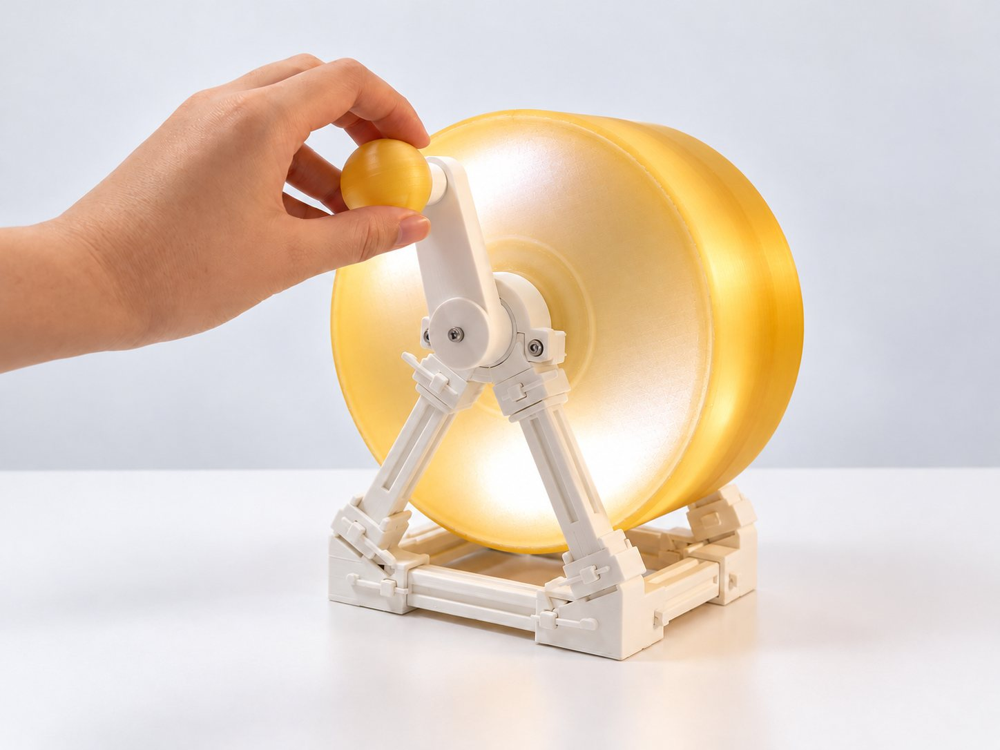
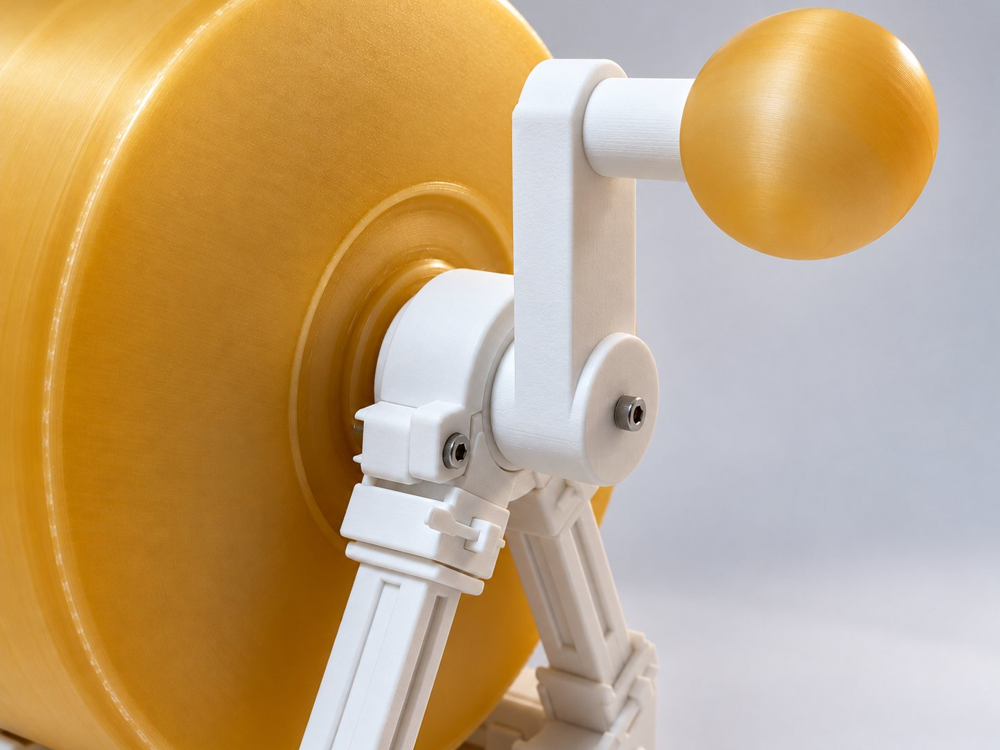
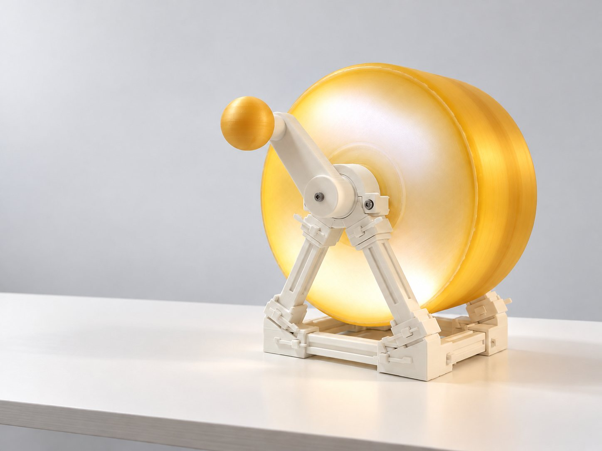

01
돌리면, 밝아진다.
한쪽으로 돌리면 밝아지고, 반대로 돌리면 어두워져요.
돌려 보기가라폰은 뽑기 기계의 둥근 통과 손잡이에서 출발했어요.
몸통 안의 MPU6050이 회전 방향과 양을 읽고, 아두이노 우노가 그 값을 밝기로 바꿔 LED 스트립 두 줄을 켭니다. 꺼짐 끝부터 최대 밝기까지 약 4.5바퀴. 어두운 쪽에 회전을 더 길게 배분해서 은은한 밝기도 손끝으로 고를 수 있어요.

다이얼을 잡고 돌리거나 마우스 휠을 굴려 보세요. 램프가 있으면 센서를 연결해서 진짜 손잡이로 돌릴 수도 있어요.

1.4 / 4.5 바퀴
센서 없이 화면에서만 돌리는 중
다음 버전이 나오면 알려 드릴게요.